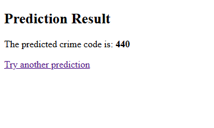
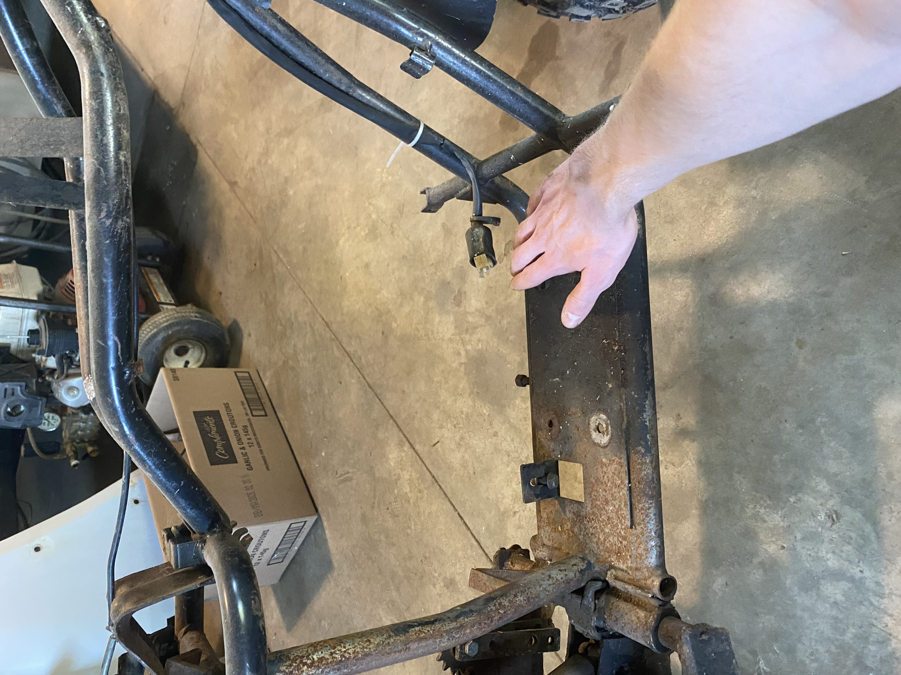
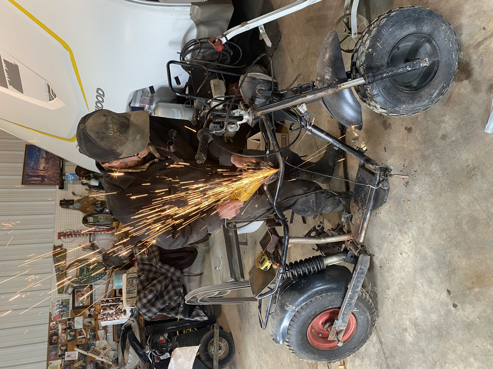

Images



Here's what I've worked on:
SDN Crime Analytic ML Model
Software Engineering
Machine Learning, Flask Development, Python, HTML, Excel,
Utilized publicly available criminal data, released by the City of Los Angeles, to build a machine learning model capable of predicting the type of crime being committed based on diverse factors such as time, day, age, sex, location, and more. This data includes every single crime committed from 2020 to 2025.
With over 1 million entries, it would be physically impossible to compile and compare the relationships between this data by hand, which is why I built a model from scratch to do it for me.
To explore and model relationships between perp data and their respective crime committed. Allowed me to explore machine-learning possibilities in a way I found interesting.

Derelict Pit Bike Restoration
Mechanical Engineering
Welding, Machining, Cutting, CAD Design, Sprocket Ratio Calculation, Max Velocity Calculation, Project Planning
Worked closely with a skilled senior practical engineer on the restoration of a derelict pitbike which was found
abandoned in a field, left to rot. Planned and ran calculations beforehand. Sanded, cut, and utilized metalworking skills to prepare the chasis to have the engine mounted.
Once the engine had been mounted, calculated the ideal sprocket ratio to reach the desired theoretical maximum speed. Ran a
chain from the engine's shaft to the back wheel, machined and developed a chain tensioner to ensure the belt did not slip off our sprockets.
To develop and practice practical engineering skills such as welding and general metalworking.




Custom Server Build
Computer & Software Engineering.
Computer Building, Operating System Implementation, Firmware and Software Implementation, Soldering. Software Development, Backend Development, HTML Development.
Utilized both scrap and new computer parts, to put together a custom server to host numerous sites and applications. Hosts
my own personal HTML applications, as well as multiple client webpages. Used software like NGROK to host without having to
go through my own IPV4 address.
Created custom .BAT files to handle starting up server applications automatically. Created
a custom HTML site with backend code to allow for further ease in booting of server side software, rather than having to constantly use terminal commands anytime I want to boot software.
To allow for the hosting of my own projects without the need of external assistance.